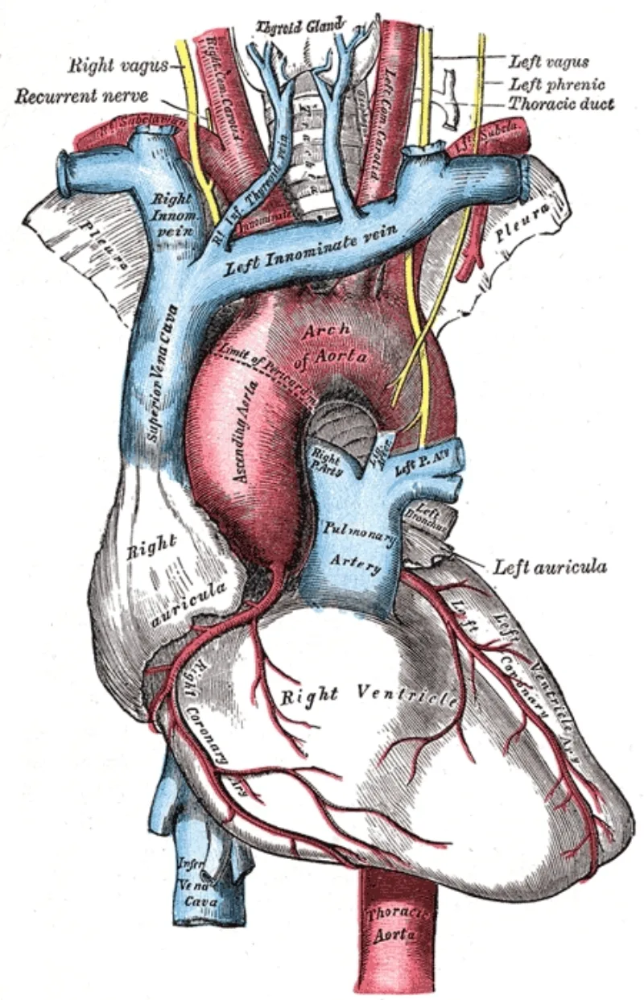
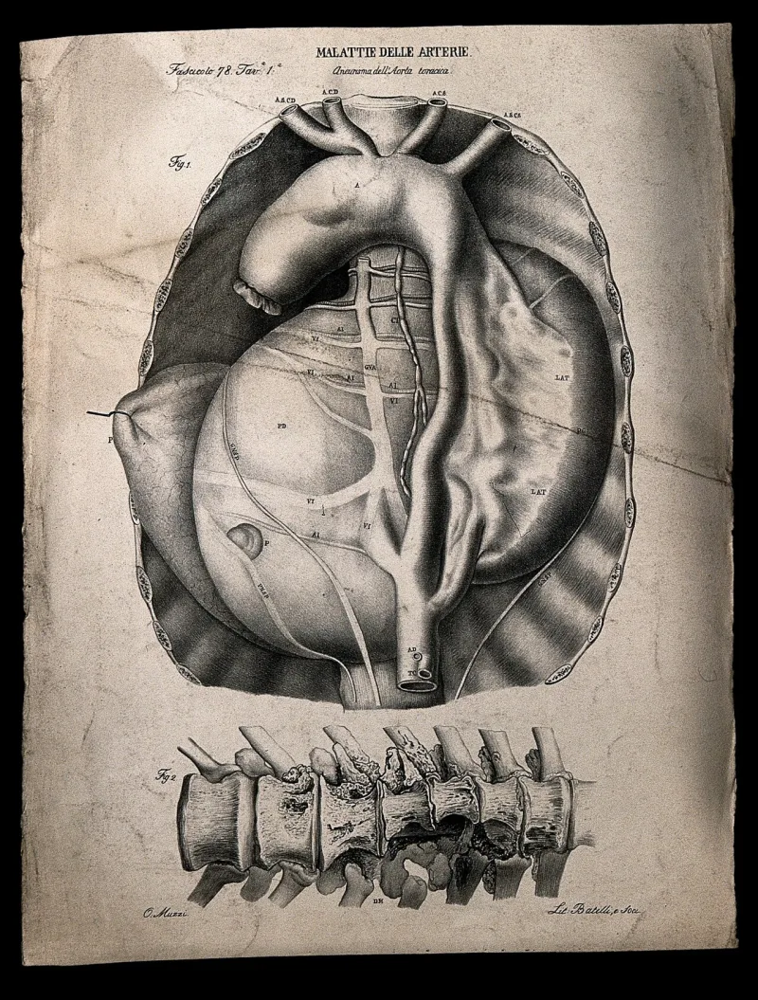
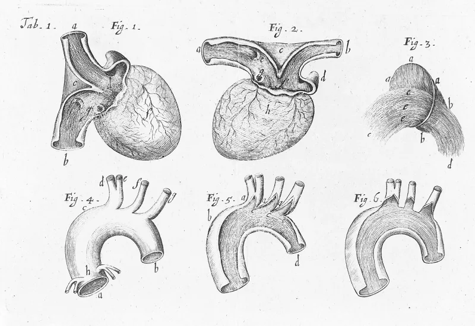

Muslim scholars have a real answer here. Say so before your friend does.
Quran 69:44-46 says of the messenger: "If he had invented false sayings concerning Us, We would have seized him by the right hand, then We would have cut from him the aorta."
Sahih al-Bukhari 4428 records his final illness. He says to Aisha: "O Aisha!
I still feel the pain caused by the food I ate at Khaybar, and at this time I feel as if my aorta is being cut from that poison." The poisoned meat was served by a Jewish woman after Khaybar fell. Reports say she did it to test his prophethood, reasoning that a true prophet would be warned.
His companion Bishr died of the same meal.
IslamQA and Islamweb answer on the text. Quran 69:44-46 describes an immediate, public execution for forgery — seizure by the right hand and instant severing, as a demonstration.
It does not describe illness three years after a poisoning; Khaybar was 628 and he died in 632. The words are as if, a simile of mortal pain, and the anatomical terms differ — abhar in the hadith, watin in the verse.
Muslims also read the episode as vindication: the meat warned him, he stopped eating, and dying from it earned him a martyr's honour after the religion was complete (5:3).
Every fact is canonical: the verse, the poisoning as a test, and the deathbed words are all in Islam's own books. The argument's force depends on reading 69:44-46 as a general rule rather than a threat of instant public punishment.
That is where a Muslim can fairly push back.
Powerful rhetoric, not a strict contradiction. You can fairly call it an astonishing irony.
You cannot fairly call it a proof. Say both halves, and let the other person weigh it.
"Do you know the report in Bukhari 4428, about what he said at the end? I found it striking."



They say 69:46 threatens instant public death, not illness three years on.
IslamQA and Islamweb answer on the text. Quran 69:44-46 describes an instant, public killing by God for forgery. He is seized by the right hand and cut at once, as a display. It does not describe death by illness more than three years after a poisoning. Khaybar was in 628, and the death in 632.
I feel as if my aorta is being cut is an Arabic idiom for mortal agony. It uses a different word for the body part — abhar, not watin. So it is a simile of pain, not a report of the punishment in 69:46.
Far from disproving him, the episode is claimed as proof. The meat itself spoke to warn him. He stopped eating. Death from its lingering effect earned him a martyr's honour, after the religion was complete (5:3). No forger controls his dying words, and naming the poison shows plain candour.
Powerful as irony, not as proof: say both halves and let them weigh it.
The chain of facts is fully canonical. The verse, the poisoning as a test of prophethood, and the deathbed aorta line are all in Bukhari.
But the argument's force depends on reading 69:44-46 as a general rule. It may instead be a threat of instant, exemplary killing. The Arabic uses different body words, and as if marks a simile.
A Christian can fairly say this much. It is at least a startling irony. Islam's own canon has its prophet dying while he describes the false prophet's punishment. He was poisoned in a test whose logic the outcome seemed to confirm. A Muslim can fairly say the verse never states the general rule the argument needs. Powerful rhetoric, not a strict contradiction.